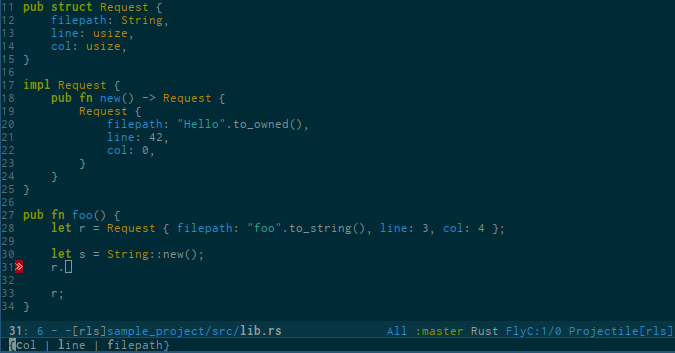
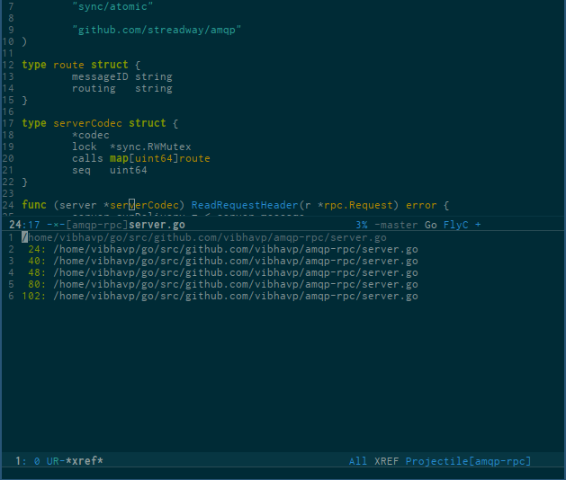
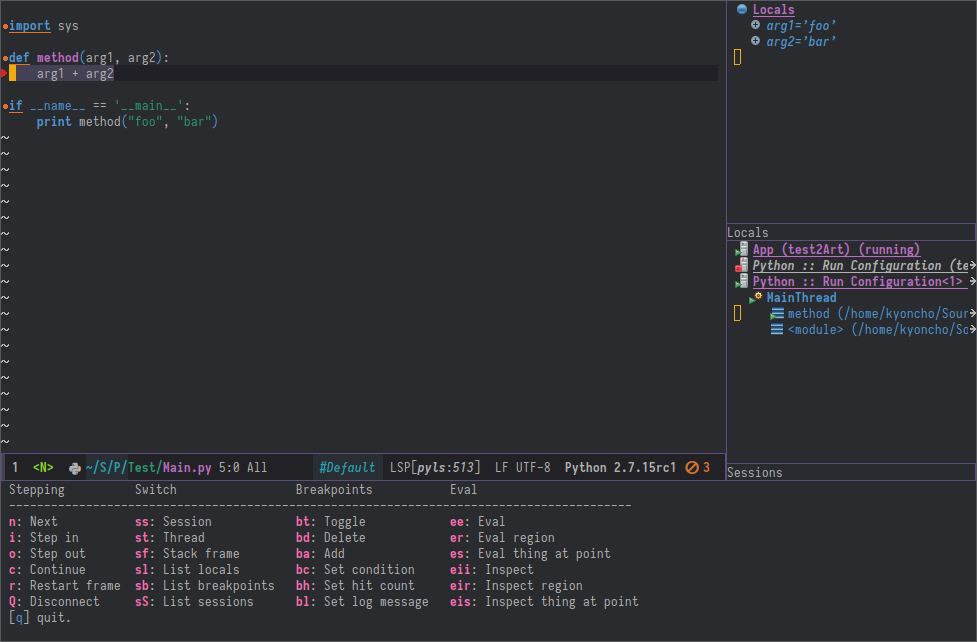
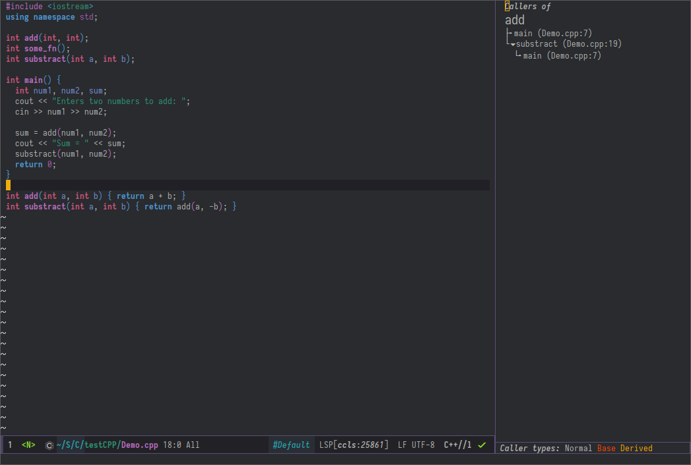
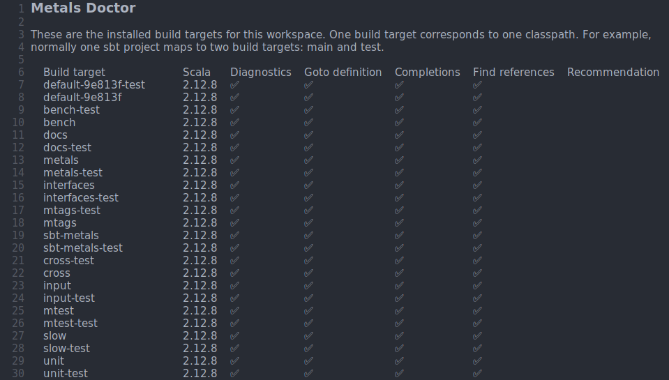
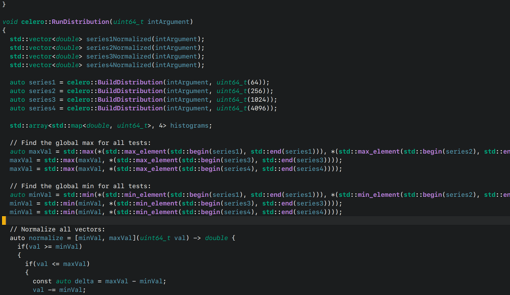
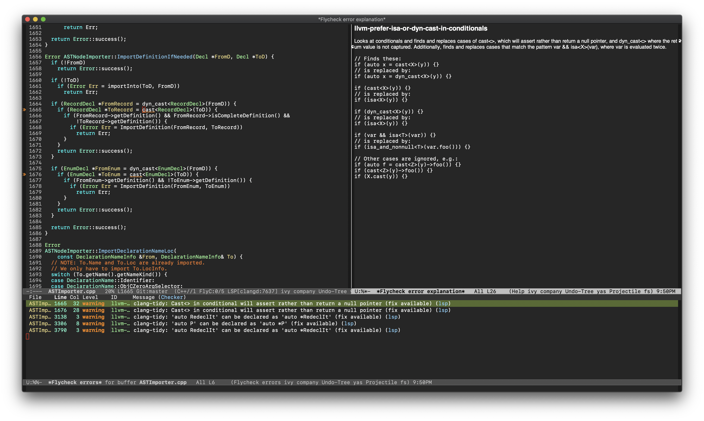

Gallery#
RUST Completion#

Typescript references using lsp-ui#

Debugging Python using dap-mode#

Call hierarchy via ccls#

Metals Doctor#

Flutter debugging#

Semantic highlighting#
As provided by clangd, built from unreleased 10.0 branch, in this screenshot, all other font-locking has been disabled (hence no syntax highlighting of comments or basic keywords such as ~auto~):

clang-tidy error explanations#
From the clangd language server:

Last update: October 27, 2020